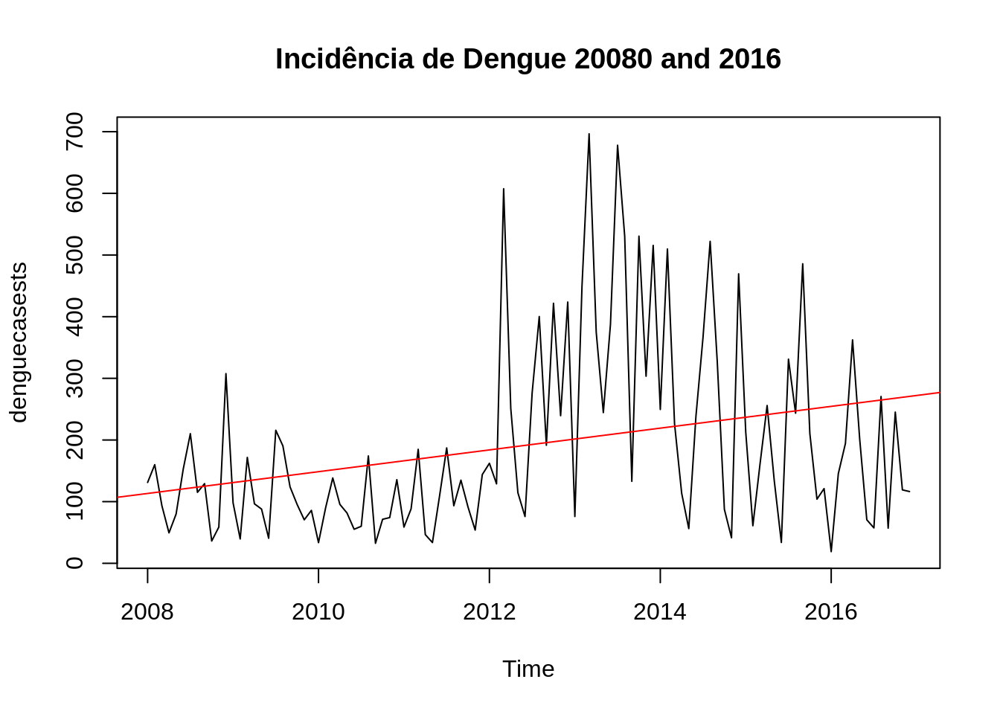
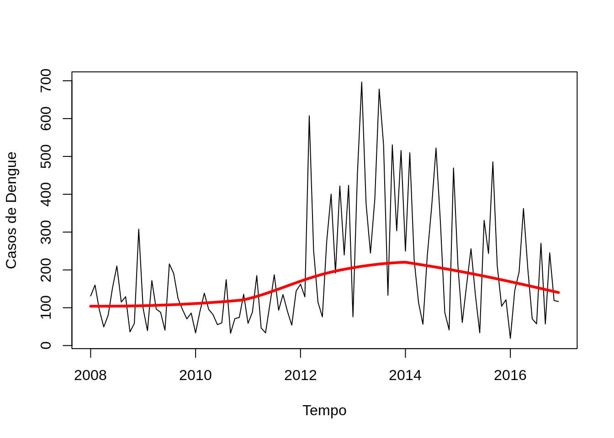
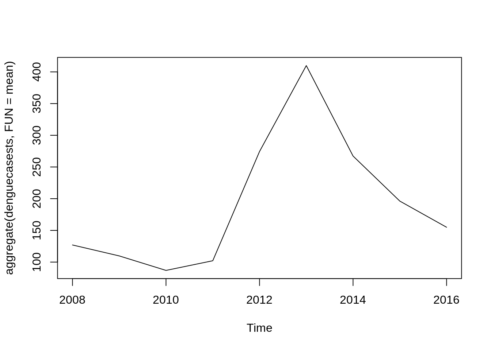
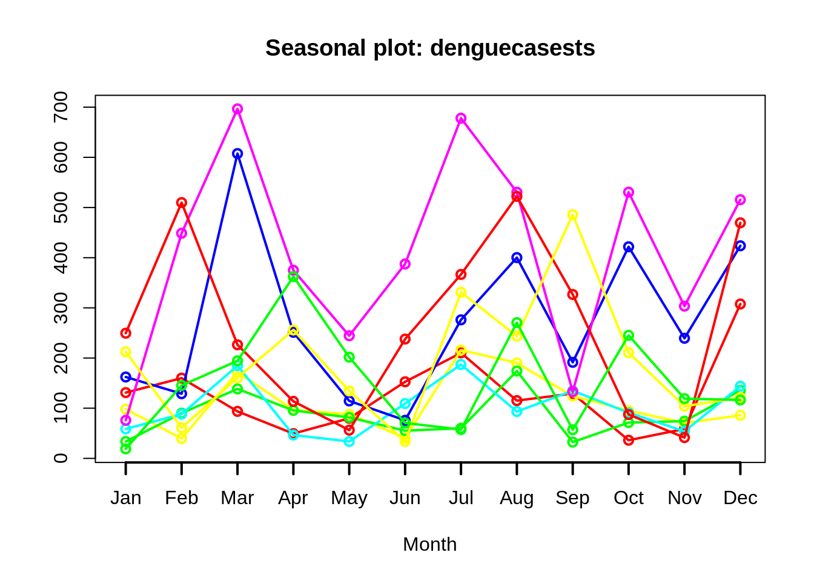
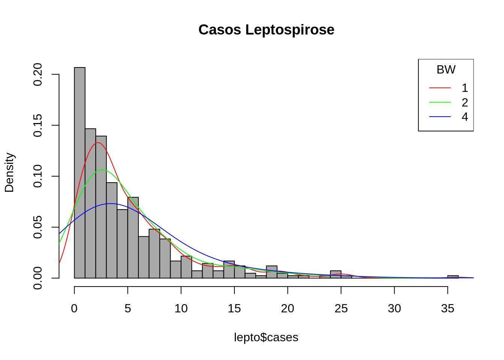

4 Transformações
As vezes os dados precisam ser transformados para a utilização de determinados métodos/modelos;
O objetivo é tornar os modelos mais simples, no caso das ST o objetivo seria melhorar as previsões;
As transformações devem ser feitas exclusivamente para aplicação do modelo, e não como uma técnica de analise dos dados em si.
4.0.1 Alguns exemplos de transfomação dos dados em ST:
Utilização de funções: Logarítmicas, Potências, Exponenciais, ou transformação Box-Cox
Diferenciação: Series não estacionárias, objetivo é transformar a série em estacionária (ex: log), estabilizando a média.
Box-Cox: Estabiliza a variância.
Médias Móveis: Permite a suavização dos dados da ST. Reduz outliers e os efeitos sazonais
Outras técnicas mais avançadas de suavização: Kernel, Loess, Splines e Generalized Additive Model (GAM)
Para mostrar o resultado dessas transformações, iremos mostrar algumas técnicas.
4.0.2 Transformações Box-Cox, Digferenciação e Logarítmica
- Box and Cox (1964) propuseram uma transformação na variável da ST \(Z_t\), que depende do parâmetro \(\lambda\) da seguinte forma:
\[ Z_{t}(\lambda) = \left\{ \begin{array}{rc} \frac{Z_t^{\lambda} - 1}{\lambda}, &\mbox{se} \quad \lambda \neq 0, \\ ln(Z_t) , &\mbox{se} \quad \lambda = 0. \end{array}\right.\]
Se o valor de \(\lambda\) é igual a zero, a transformação logarítmica da sequência inicial é realizada, no caso em que o valor de lambda difere de zero, a transformação é por lei exponencial. Quando \(\lambda\) é igual a 1, a série é analisada em sua escala original, enquanto o caso \(\lambda = 1/2\) corresponde à transformação transformação da raiz quadrada. Para que a transformação seja aplicável, a série deve ser estritamente positiva.
Ex: Utilizando os dados do dataset Air Passengers, temos:
library(forecast)
par(mfrow=c(3,2))
# Série original
plot(AirPassengers, ylab="Passageiros", main="Original")
# Lambda = 0, Logaritmica
t1 = BoxCox(AirPassengers,lambda =0 )
plot(t1, ylab="Passageiros", main="Lambda = 0, Logaritmica")
# Lambda = 0.34
t2 = BoxCox(AirPassengers,lambda =.1 )
plot(t2, ylab="Passageiros", main="Lambda = 0.34")
# Gera labda automático
lbd = BoxCox.lambda(AirPassengers)
# print(lbd)
t3 = BoxCox(AirPassengers,lambda =lbd )
plot(t3, ylab="Passageiros", main="Labda Automático")
# Diferenciacao
t4 = diff(AirPassengers)
plot(t4, ylab="Passageiros", main="Diferenciacao")
# Logaritmo
t5 = log(AirPassengers)
plot(t5, ylab="Passageiros", main="Log")
4.1 Métodos de Alisamento ou Suavização
Uma função é suave se contı́nua e derivável em todos os pontos.
Utiliza-se a expressão Funções de Suavização para definir funções que aplicadas sobre um conjunto numérico retornam outro conjunto cujos valores tendem à média, local ou global.
Utiliza-se funções de suavização quando se supõe que o fenômeno é de fato suave, e as observações apresentam variabilidade aleatória pouco relevante.
Também são utilizadas quando se deseja modelar a estrutura geral o fenômeno, desconsiderando cada ocorência isolada.
4.1.1 Algumas funções de suavização
Médias móveis
Kernel density: estimativa de densidade de probabilidade – equivale à uma média ponderada.
Loess: locally weighted scatterplot smoothing – estende a mesma idéia, mas os valores entram em uma regressao ponderada (não apenas média, ou seja, inclui uma inclinação)
Splines: cúbica, p-splines, thin plate
Todas essas funções podem ser uni ou multi-dimensionais

4.1.2 Médias móveis
Considere a ST estacionária e localmente constante, composta de seu nível e mais um ruído aleatório.
\[Z_t = \mu_t + a_t\], \(t = 1,2,...,N\)
http://www.portalaction.com.br/series-temporais/31-medias-moveis-simples-mms
Sendo
- Processo de Transformação - "Suavização da Série"
- Remoção de outliers
- Identificação de tendências
- Simples e Exponencial
**Ex:** Médias Móveis - ordem 5
- Utilizando a ST mensal referente as mortes por Doenças Pulmonares no Reino Unido (1974–1979), temos:

4.2 Alisamentos - Lowess

4.2.1 Locally Weighted Sum of Square (Lowess)
- É uma regressão linear local ponderada
- A largura da janela é indicado por uma fração dos dados que varia de 0 a 1
- Exemplo: largura 0,1 significa que a janela tem largura que equivale a 10% do eixo horizontal
- Quanto maior o tamanho da janela, maior o alisamento e vice-versa4.3 Prática no R
4.4 Médias Móveis
setwd("~/Documentos/cursos_ecologicos_2019/dados")
dengue_original=read.csv("denguecases2.csv")
denguecasests=ts(dengue_original$Dengue_Cases,start=c(2008,1),end=c(2016,12),frequency=12)
par(mfrow=c(2,2))
plot(denguecasests, main="ST original")
#Função do pacote forecast que é utilizado para suavização e limpeza de outliers
dengue3 = tsclean(denguecasests)
plot(dengue3, main="Suavização e Limpeza")
# Média móvel de ordem = 5
dengue1 = ma(denguecasests, order = 5 )
plot(dengue1, main="MA ordem 5")
# Média móvel de ordem = 12
dengue2 = ma(denguecasests,order=12)
plot(dengue2, main="MA ordem 12")
plot(denguecasests, lwd=1.5)
lines(dengue1, lwd=1.5, col="red")
lines(dengue2, lwd=1.5, col="blue")
lines(dengue3, lwd=1.5, col="green")
#legenda
legend("topright",legend=c("Original","MA 5","MA 12","tsclean"), col = c("black","red","blue","green"), lty=1:2, cex=1)
4.5 Análise dos Resíduos
Jan Feb Mar Apr May2008 0.1311332 20.8814031 -43.3428168 -68.3229542 -23.0091775 Jun 2008 48.7772048


[1] 15896.91
[1] 0.5186493
Segundo o teste de autocorrelação Ljung-Box, temos:
\(H_{0}\): Os resíduos são i.i.d.
\(H_{1}\): Os resíduos não são i.i.d.
Segundo o teste de normalidade Shapiro-Wilk, temos:
\(H_{0}\): Os resíduos apresentam normalidade na distribuição
\(H_{1}\): Os resíduos não apresentam normalidade na distribuição

 Ljung-Box test
data: Residuals from ARIMA(0,1,1)(0,0,1)[12] Q* = 26.006, df = 20, p-value = 0.1656
Model df: 2. Total lags used: 22
Shapiro-Wilk normality testdata: prev$residuals W = 0.96905, p-value = 0.01275
Como o p-valor = 0.1656 para o tete de Ljung-Box, podemos dizer que não existe evidências de que exista autocorrelação entre as incidências de dengue no período de estudo.
Também podemos verificar que o pressuposto de noralidade não pode sr aceito, pois *p-valor = 0.01275 do teste de shapiro-wilk.
4.6 Bibliografia sugerida
Hastie, T.; Tibshirani, R. Generalised Additive Models. Chapman & Hall, 1990.
Wood, S.N. Generalized Additive Models: An Introduction with R. Chapman & Hall/CRC Texts in Statistical Science Series, 2006.
Faraway, J.J. Extending the Linear Model with R. Chapman & Hall/CRC Texts in Statistical Science Series, 2006.